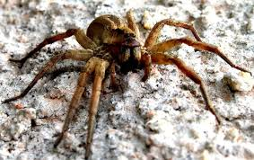

Phoneutria (Nhện lang thang Brasil) là một chi nhện trong họ Ctenidae. Có tám loài, tất cả đều rất hung hăng có nọc độc có độc tính cao. Tất cả các loài đều sinh sống ở một số khu vực Trung và Nam Mỹ. Loài ở châu Âu có thể là loài du nhập.[1]. Trong ấn bản Sách Kỷ lục Guinness 2012, loài nhện này được xếp hạng là nhện độc nhất thế giới. Một số loài có nọc độc của loài nhện này ít có khả năng để tấn công một con người, và cuốn sách kỉ lục thế giới thực sự nói rằng mặc dù các con nhện lang thang Brasil là nhện độc hại nhất, nhiều cái chết thực sự xảy ra do bị nhện quả phụ đen và nhện nâu ẩn dật nhện cắn, do hiếm có trường hợp nhện lang thang thực sự cắn bất cứ ai.

Khi đề cập đến các loài nhện đáng sợ, người ta thường nhắc đến "góa phụ đen" và nhện nâu ẩn dật. Nhưng nhện lang thang Brazil mới là loài nhện độc nhất thế giới. Tên khoa học của loài nhện đáng sợ này là Phoneutria, hay còn gọi là nhện chuối. Chúng khá nhỏ so với các loài nhện khác, ít di chuyển và kiếm mồi vào ban đêm.
Nọc của nhện chuối là loại độc ảnh hưởng tới thần kinh mạnh nhất trong họ nhà nhện. Khi bị cắn, chất độc nhanh chóng tấn công hệ thống canxi trong hệ thần kinh đảm nhiệm chức năng kiểm soát cơ và hô hấp khiến nạn nhân ngạt thở đến chết. Chỉ với 0,006 mg nọc đã có thể giết chết một con chuột. Loài nhện này rất hung hăng và sẵn sàng tấn công bất cứ kẻ nào xâm phạm lãnh thổ của chúng
